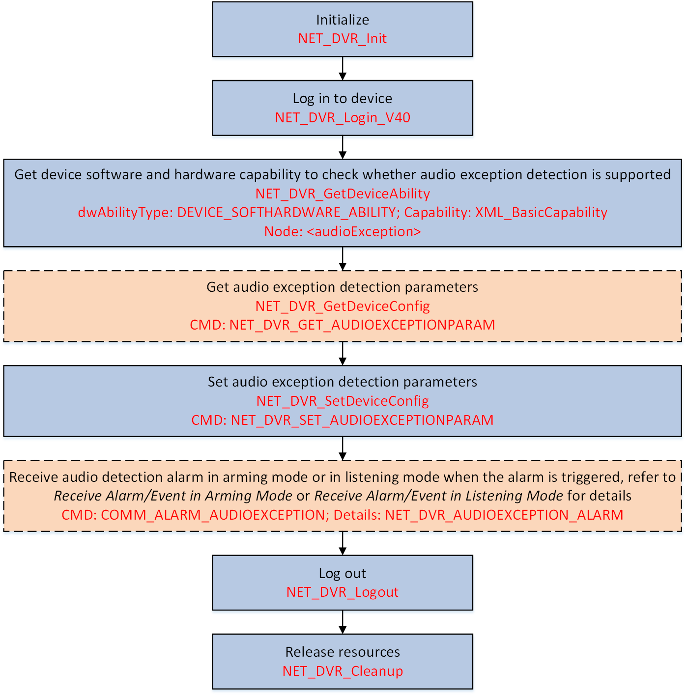

When the sound in the environment is detected as the sudden increase or
decrease of sound intensity, the audio exception detection alarm will be triggered. You can
configure linkage actions, such as alarm output, uploading alarms to the center, etc., for
the audio exception detection alarm.

Figure 1 Programming Flow of Configuring Audio Exception Detection Alarm
-
Call NET_DVR_GetDeviceAbility and set the capability type (dwAbilityType) to "DEVICE_SOFTHARDWARE_ABILITY"
(macro definition value: 0x001) for getting the device software and hardware
capability to check if the audio exception detection is supported by the
device.
The device software and hardware capability is returned in the
message XML_BasicCapability by output buffer (pOutBuf).
If the node <audioException> is returned in the message and its value is
true, it indicates that the audio exception detection is supported, and you
can continue to perform this task.
Otherwise, the audio exception detection is not supported by the
device, please end this task.
- Optional:
Call NET_DVR_GetDeviceConfig with "NET_DVR_GET_AUDIOEXCEPTIONPARAM" (command
No.: 3366), and set the input parameter pointer (lpInBuffer) to the structure NET_DVR_CHANNEL_GROUP for getting the audio exception detection
parameters, including detection rule, arming schedule, alarm linkage, and so on,
for reference.
The audio exception detection parameters is returned in the
structure NET_DVR_AUDIO_EXCEPTION by output parameter lpOutBuffer.
-
Call NET_DVR_SetDeviceConfig with "NET_DVR_SET_AUDIOEXCEPTIONPARAM" (command
No.: 3367), set the input parameter pointer (lpInBuffer) to the structure NET_DVR_CHANNEL_GROUP, and set the input parameter (lpInParamBuffer) to the structure NET_DVR_AUDIO_EXCEPTION for setting the audio exception detection
parameters.
Note:
-
To receive the alarm in the platform, the linkage
action must be set to "0x04" (upload to center).
-
The above audio exception detection parameters can
also be configured by logging in to the device via web
browser.
-
Receive the audio exception alarm in arming mode (see Receive Alarm/Event in Arming Mode) or in listening mode (see Receive Alarm/Event in Listening Mode) when the alarm is triggered.
Call NET_DVR_Logout and NET_DVR_Cleanup to log out and release resources.